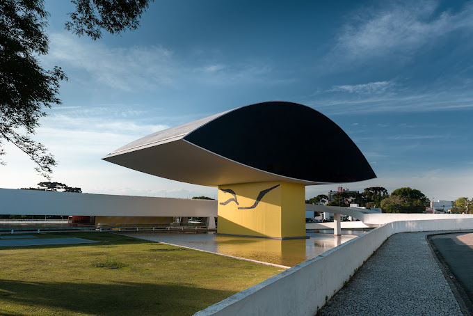
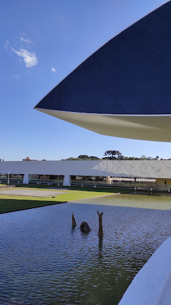
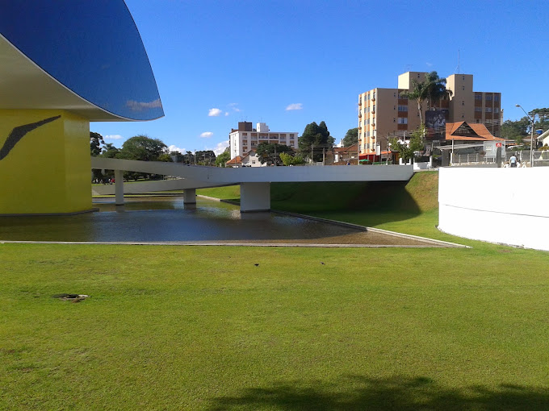

Importancia historica
Ícone da Arquitetura Moderna: Projetado originalmente em 1967 por Oscar Niemeyer (um dos maiores arquitetos do mundo), o edifício principal ganhou seu anexo mais famoso — a icônica torre em formato de olho — quando o arquiteto já tinha mais de 90 anos, reinaugurado em 2002.

Contexto historico
• 1967 a 1978: Niemeyer cria o prédio principal (com um grande vão livre de 65 metros), que foi inaugurado em 1978 chamado Edifício Presidente Humberto Castelo Branco, funcionando como sede de secretarias de Estado do Paraná. Irônica e politicamente, o prédio de um arquiteto de esquerda (opositor à ditadura) abriu com o nome de um presidente do regime militar.

Importancia Cultural
Espaço de Convivência e Educação: Além das galerias, o complexo conta com áreas de lazer como o "Parcão", programas educativos (como o Arte para Maiores) e o segundo maior vão livre coberto do Brasil (com 65 metros), estimulando o encontro comunitário e o acesso democrático à cultura

Importancia Cultural
Imagens em memoria do Paraná


Curiosidades
Curiosidades 1
🐟 Barreado: prato típico do litoral do Paraná, preparado lentamente em panela bem vedada. É especialmente associado a cidades como Morretes e Antonina.
Curiosidades 2
🪵 O Movimento Paranista O estado teve seu próprio movimento artístico e intelectual exclusivo nas décadas de 1920 e 1930. O Movimento Paranista buscou criar uma identidade regional forte exaltando elementos típicos da natureza local. É por isso que a árvore Araucária, o pinhão e a ave Gralha-Azul